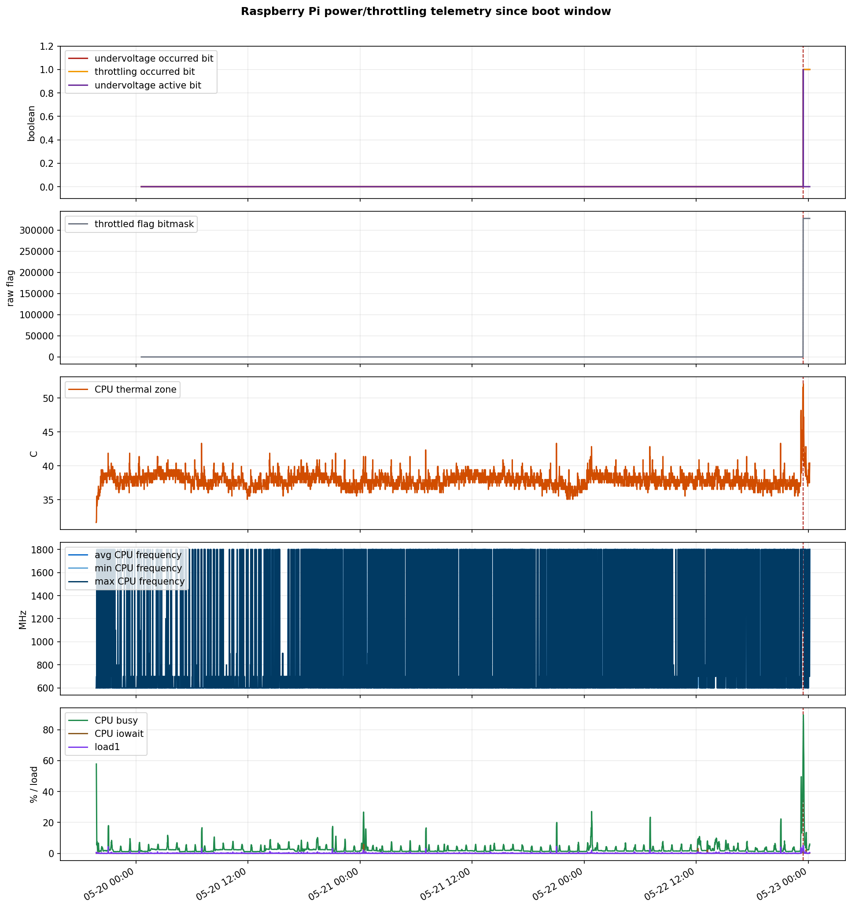
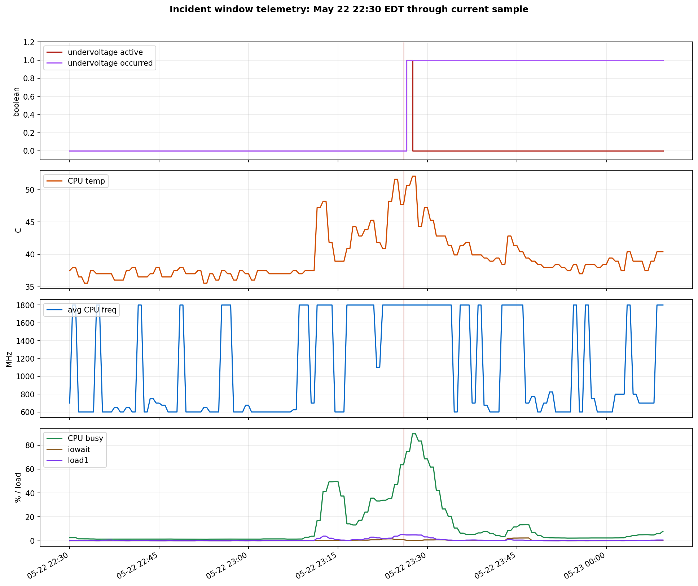

microserver Undervoltage RCA
Full incident report for the Raspberry Pi 400 host, using live checks, local kernel and OctoPrint logs, and Grafana Cloud Prometheus/Loki telemetry. All timestamps are America/New_York.
get_throttled=0x50000: historical bits only, active bits clear.slic3r_main at roughly 343% CPU at event time.Executive Summary
Confidence is high that the host experienced a real but brief undervoltage event. Confidence is medium-high that the workload-induced current spike exposed insufficient power margin. The exact physical weak point, such as PSU, cable, USB/NVMe draw, or connector resistance, is not proven by telemetry and should be treated as the remediation target.
Evidence Timeline
| Time | Evidence | Source | Interpretation |
|---|---|---|---|
| May 19 19:43:26 | Host booted. | uptime -s | Past throttling bits apply to this boot only. |
| May 22 23:24-23:26 | slic3r_main running at 276-354% CPU; load1 rose to 5.14. | Grafana Prometheus top_process_cpu_percent, node_load1 | The host was doing multi-core slicing work. |
| May 22 23:26:00 | Undervoltage detected! | Kernel journal | Firmware/hwmon detected low input voltage. |
| May 22 23:26:04 | Voltage normalised | Kernel journal | The low-voltage condition cleared after roughly 4 seconds. |
| May 22 23:26:30 | raspberry_pi_undervoltage_active=1, raspberry_pi_throttling_active=1. | Grafana Prometheus textfile metric | The scrape caught the active condition or recently active firmware state. |
| May 22 23:27:30 | Active undervoltage/throttling returned to 0; occurred bits remained 1. | Grafana Prometheus | The event was transient; historical flags persist until reboot. |
| May 22 23:28:06 | bua_bore_heavy_first_supported.gcode written. | File mtime | The second slicing job overlapped the incident window. |
| May 22 23:29:03 | OctoPrint Pi support warning: undervoltage reported. | OctoPrint log | OctoPrint saw the latched historical firmware flag after the event. |
| May 22 23:38:34 | bua_bore.gcode print started. | OctoPrint log | The current print began after the undervoltage event had cleared. |
| May 23 00:10 | Printing, temps stable near 60 C bed and 200 C hotend; no current undervoltage. | OctoPrint API and vcgencmd | No live print-impact evidence at report time. |
Grafana Telemetry
Alloy is configured to remote-write node exporter metrics and textfile metrics to Grafana Cloud Prometheus. The relevant Raspberry Pi metrics are:
raspberry_pi_throttled_flags raspberry_pi_undervoltage_active raspberry_pi_undervoltage_occurred raspberry_pi_throttling_active raspberry_pi_throttling_occurred raspberry_pi_power_metrics_scrape_error
Grafana Prometheus returned 58,002 matching host/process series for the inspected range. The textfile scrape error stayed at 0, so the Raspberry Pi power metrics were parseable. Grafana Loki was reachable but only had the configured cron jobs for this host in the incident window; kernel/syslog lines were not present in Loki, so kernel log evidence in this report comes from local journald.


Statistics
| Metric | Min | Max | Average | Last sample | Notes |
|---|---|---|---|---|---|
| Undervoltage active | 0 | 1 | 0.00023 | 0 | One short active period was visible in Grafana. |
| Undervoltage occurred | 0 | 1 | 0.01001 | 1 | Latched since 23:26 until reboot. |
| Throttling active | 0 | 1 | 0.00023 | 0 | Transient active throttling only. |
| Throttling occurred | 0 | 1 | 0.01001 | 1 | Latched after the event. |
| CPU temperature | 31.6 C | 52.1 C | 37.9 C | 40.4 C | No thermal root cause. |
| CPU busy | 1.1% | 89.5% | 2.7% | 6.0% | Peak coincides with slicing workload. |
| I/O wait | 0.02% | 5.86% | 0.05% | 0.17% | No sustained storage bottleneck. |
| Average CPU frequency | 600 MHz | 1,800 MHz | 927 MHz | 1,800 MHz | Frequency scaling follows ondemand behavior; not persistent throttling. |
| Load1 | 0.00 | 5.14 | 0.13 | 0.59 | Peak around slicing. |
| Root filesystem used | 8.0% | 9.6% | 8.5% | 9.6% | Not a risk. |
| NVMe-backed share used | 81.7% | 81.9% | 81.8% | 81.9% | Worth watching, but below the 85% warning threshold. |
Workload Correlation
| Time | Top CPU process | Observed CPU | Other notable load |
|---|---|---|---|
| 23:24 | slic3r_main, PID 450419 | 276% | Codex 36%, slicing wrapper 34% |
| 23:25 | slic3r_main, PID 450419 | 354% | Codex around 15%; load1 5.14 by 23:25:30 |
| 23:26 | slic3r_main, PID 450419 | 343% | Chromium startup processes, Codex, and slicing wrapper also active |
| 23:27 | slic3r_main, PID 451643 | 335% | Supported slicing job running after the first slice |
| 23:28 | slic3r_main, PID 451643 | 338% | Supported slice finished at 23:28:06 |
The incident is therefore best explained as a power delivery margin issue under multi-core CPU load rather than a software-only failure. The CPU can run at 1.8 GHz, but the power path appears close enough to the threshold that a bursty multi-core workload can trip the Pi firmware undervoltage detector.
Root Cause Assessment
Confirmed
| Real undervoltage event | Confirmed |
| Transient active throttling | Confirmed |
| Historical flags currently latched | Confirmed |
| Thermal throttling | Not supported |
| Persistent current throttling | Not present |
| OctoPrint serial failure | Not observed |
Likely Causal Chain
- PrusaSlicer used most CPU capacity for several minutes.
- CPU current draw increased while USB/NVMe and normal services were also powered.
- The Pi power rail dipped below the firmware low-voltage threshold.
- Firmware set active undervoltage and throttling bits, then recovered within seconds.
- Past-event bits remained latched, causing later OctoPrint health warnings even after recovery.
Impact Analysis
| Area | Observed impact | Risk if repeated |
|---|---|---|
| Current 3D print | No direct event overlap. The print started at 23:38:34, after voltage normalized. | Repeated undervoltage during printing could cause serial stalls, pauses, USB disconnects, or reboot. |
| CPU performance | Brief throttling flag; no persistent cap. Current CPU max remains 1.8 GHz. | Heavy local slicing can slow or stutter while throttled. |
| Storage | No kernel I/O errors found in the event window; iowait was low. | Undervoltage can make USB/NVMe less reliable if severe or repeated. |
| OctoPrint | Pi support and health-check warnings only. No serial log evidence because serial logging is disabled; OctoPrint log shows print state transitions normally. | OctoPrint may warn until reboot because past flags remain latched. |
| Telemetry | Prometheus caught the event; Loki did not have kernel logs for this host. | Without journal shipping, future RCA still depends on local logs being retained. |
Corrective Actions
| Priority | Action | Why | Verification |
|---|---|---|---|
| P0 | Do not run full-core slicer jobs on the Pi during important prints until power margin is fixed. | PrusaSlicer was the strongest correlated trigger. | No active undervoltage while printing; raspberry_pi_undervoltage_active stays 0. |
| P0 | Improve power delivery: official/known-good 5.1 V supply, short low-resistance cable, secure connector. | Undervoltage is a physical supply-margin problem. | Run a controlled CPU load after the print and confirm no flags set. |
| P1 | Move the USB NVMe to a powered hub or otherwise reduce bus-powered load. | The NVMe is a plausible contributor to rail margin even though the event was CPU-triggered. | Stress CPU and disk separately; no kernel undervoltage messages. |
| P1 | Throttle slicer CPU when running on the Pi, for example a wrapper using lower priority or CPU quota. | Limits peak current draw and preserves OctoPrint responsiveness. | Top-process telemetry shows slicer below 200% CPU during future slices. |
| P1 | Add Grafana alerting on raspberry_pi_undervoltage_active == 1 and raspberry_pi_throttling_active == 1. | Active events need immediate notification; occurred bits are latched and noisy after first event. | Test alert against a synthetic textfile metric or temporary rule. |
| P2 | Ship journald/kernel logs to Loki using Alloy journal support. | Loki currently lacks the kernel lines needed for full Grafana-only RCA. | Loki query for Undervoltage detected returns future events. |
| P2 | Increase power metric sampling frequency from 60s if practical. | The actual event lasted 4 seconds; 60s scraping can miss active intervals. | Short active events are visible without relying only on latched bits. |
Runbook
Data Quality and Limits
| Prometheus scrape interval | The active event was short. Grafana shows the event at scrape/query resolution, while journald provides second-level timing. |
| Past flags | Raspberry Pi firmware past-event bits persist until reboot. They prove an event occurred since boot, not that throttling is active now. |
| Physical root cause | Telemetry proves undervoltage, but not whether the weak point is PSU, cable, connector, USB/NVMe load, or a combination. |
| Loki coverage | Grafana Loki is configured and reachable, but the inspected labels only showed cron logs for this host. Kernel logs are not currently available in Loki. |
| OctoPrint serial detail | OctoPrint serial logging is disabled, so the report uses OctoPrint state/logs rather than raw serial command timing. |